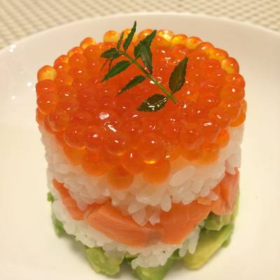
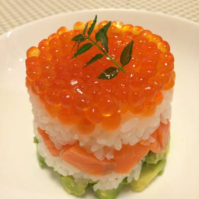
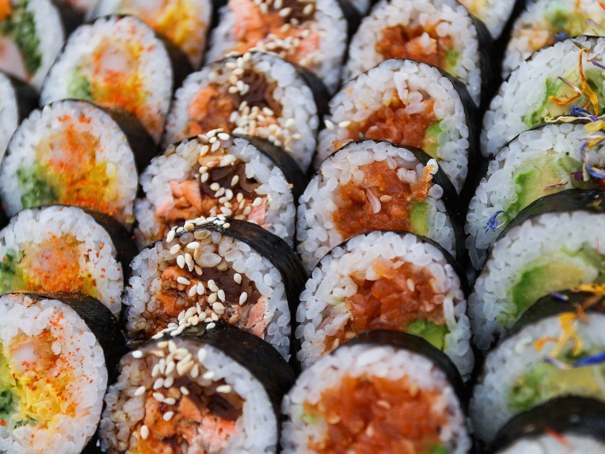
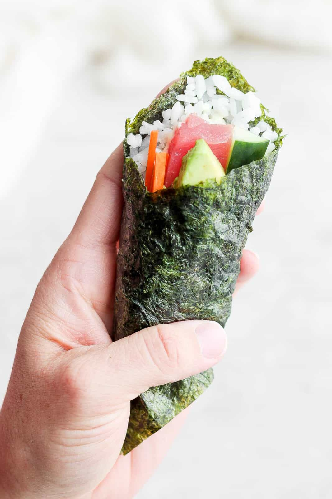
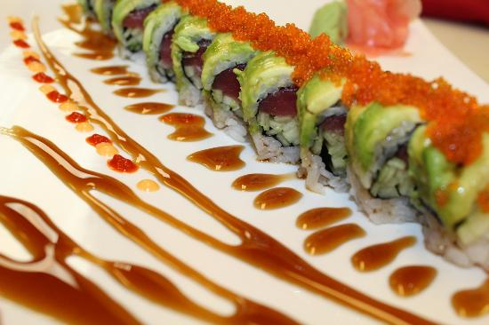
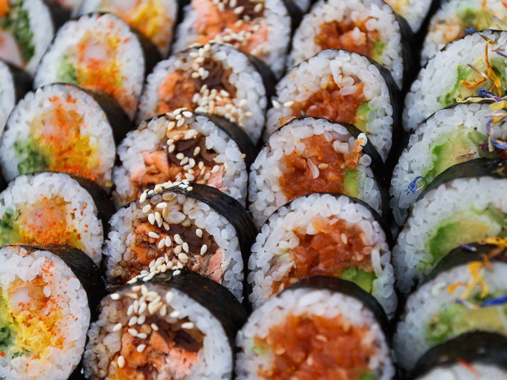
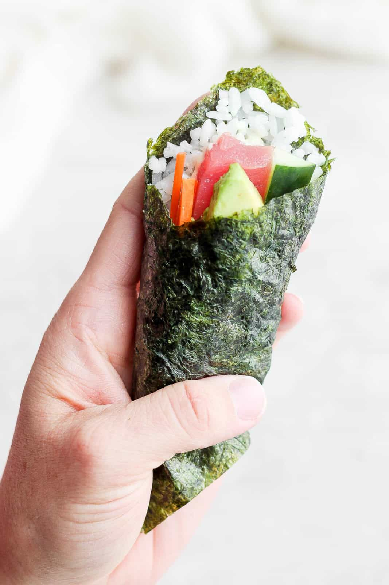
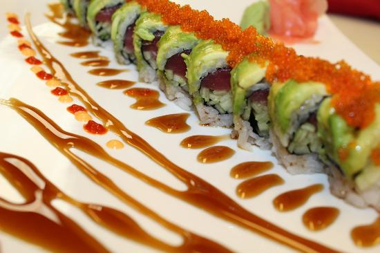

SUSHI
So my favorite food is sushi. With all of its amazing combinations and no limits to what choices you can have, why would it not be the best? Don't want any sort of sauce on the sushi, GONE, don't want wasabi, EASILY REPLACED, even if you don't like seaweed, THERES SOY PAPER FOR A REASON!
 

 




